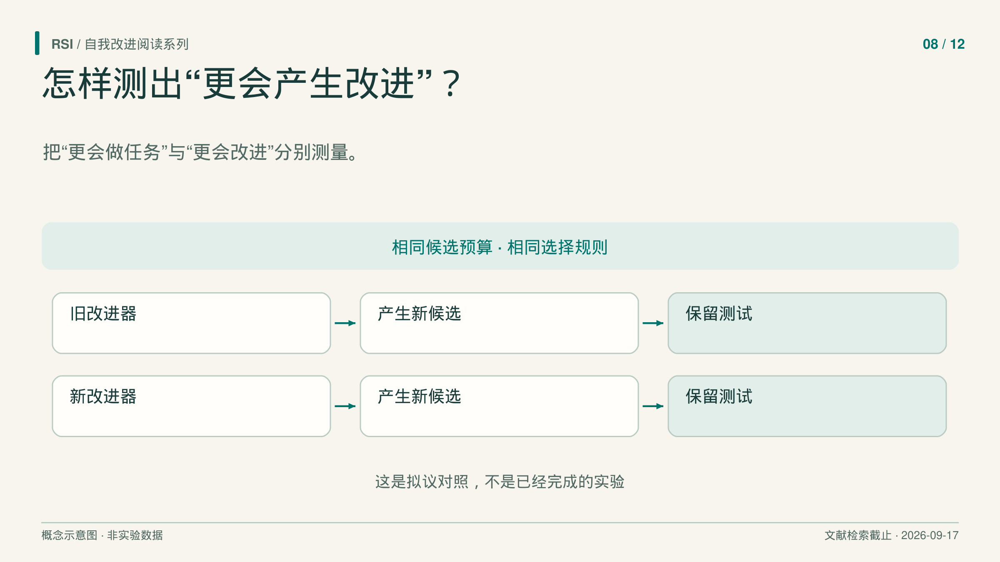
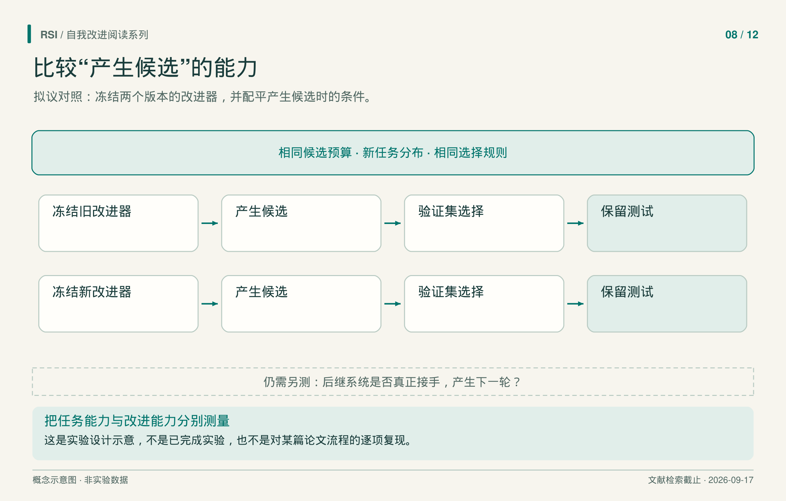

设想两套系统解决当前任务的成绩相同，其中一套却更会诊断失败、选择实验、产生更强后继者。只看当前任务分数，就会漏掉这个差别。
这是用于说明问题的假设例子，不是已报告实验。它指出了自我改进主张需要测量的对象：产生改进的过程。允许这个过程编辑自身，说明什么可以改变；检验它生成的后代，才能了解改变取得了什么效果。
Hyperagents、Dream-RSI、研究 harness 优化和 HELIX 分别接近了这个问题的不同部分。把它们放在一起看，可以区分当前解法更好、搜索过程更有效，以及后继系统真正接手下一轮。

先冻结改进器，再检查它能做什么
Hyperagents 将 task agent 和 meta agent 放入同一个可编辑程序。前者完成任务，后者提出并实施修改。DGM-H 可以改两部分，主实验的基础模型、父代选择和评价协议仍然固定。
关键测量名为 imp@50。作者从论文评审或机器人任务的运行中选出 hyperagent，迁移到新的 IMO 数学证明评分领域。在新领域暂时冻结 meta agent，让它产生 50 个 task agent，按验证分选出最佳候选，再在保留测试上计算相对起点的提升。
冻结有明确用途：把已经得到的改进器固定下来，检查它能产出怎样的后代。如果测量期间改进器也持续变化，就难以确定结果应归给哪个版本。这个协议比只测迁入新领域后的第一个 task agent，多观察了一项产生后继改进的能力。
归因仍有限制。迁移同时带去了 task 与 meta 两部分，接近零的起点也包含没有按要求输出格式的失败。修复格式是有效适应，但不能未经分解，就把它等量解释成数学判断能力增长。结果支持的是这套迁移系统在给定生成、选择和测试协议下的表现。
改进也可以发生在探索方向上
搜索还要决定扩展哪个分支、同时运行多少尝试、何时停止。Dream-RSI 将这套探索策略作为可编辑对象。
它把执行过的发现树转成回放环境，让候选策略利用已经记录的结果，重新选择分支顺序、并行批次与停止时机。回放能提供较便宜的反馈，却不能揭示未访问分支的结果。新的观察仍需后续真实在线执行。
发现 agent、策略开发 agent、模型、评价器和执行接口都保持固定。因此，探索策略变好，并不能直接说明开发策略的程序也变好；它识别的是一个可以修改、可以保留的具体组件。
论文的 Lasso 实验比较了五轮 Dream-RSI 与 Fixed Exploration，两者使用相同 Gemini-3.1 Pro 模型，并匹配每轮最大预算。发现的算法在六个保留数据集上的平均求解耗时从 3587.1 毫秒降至 2931.0 毫秒，累计 discovery-agent 调用从 550 次降至 317 次。
两个指标回答不同问题。求解耗时衡量产出的算法，调用数衡量搜索支出的一部分。后者没有完整合并回放、策略开发、工具、token 和墙钟时间，不能直接写成总研发成本同比例下降。在旧历史上胜出的策略，也不保证在未来每棵搜索树上继续胜出。
更好的 harness 有自己的作用范围
Harness 是组织角色、提示、工具调用、中间结果和检查的外层程序。RHI 在固定编码模型的情况下，修订这套组织方式。
外部优化器读取相邻版本产物的偏好比较，以及过去的修订历史，再提出新规范。虽然评价提示没有直接交给优化器，评价所产生的偏好历史仍会间接传递哪些特征受到奖励。
报告的研究覆盖 30 个合成机器学习研究任务，使用模型进行两两产物判断。偏好分数改善、归一化单次执行成本下降，都对应这个设置；它们不能单独证明一个通用研究 agent 获得了可迁移技能。单次执行成本也没有包含获得所选 harness 之前的全部版本、优化调用和评判成本。
因此，要继续问清：哪个组件受益，作用于哪些任务，成本算到哪里？同任务流程修订、通用改进器的持久变化、模型训练，是不同干预，即使它们都利用了历史尝试。
交接构想需要真实后继者
HELIX 提出以 model–harness pair 作为跨轮状态，按 build–update–rebuild 组织过程：先评价 harness，把核验经验整理为模型更新数据，再围绕更新后的模型重建 harness。
所读论文准备了模型更新数据，但没有训练更新后的模型，也没有实测多轮 model–harness 闭环。这个区别落在实际操作上：图中的“更新模型”方框，在真实后继模型运行之前，仍然只是拟议步骤。
候选矩阵也说明了选择怎样改变分数含义。65 个候选分别在前 100 个符合条件的 AtCoder 来源修复任务上各运行一次，均使用 MiniMax-M2.7-highspeed 模型标签，并且只用公开测试判定成功；这不是隐藏测试或官方 LiveCodeBench 成绩。Pi 基线完成 50 题，最佳固定 harness 完成 52 题。79 题则来自事后 portfolio union：看完全部结果，只要有一个候选解出某题，就把它算入并集。这说明候选有互补性，却没有提供一个事先知道该选谁的可部署选择器。把并集写成单个 agent 的 79% 成绩，就换掉了统计对象。

这是根据文献提出的对照设计，不是 Hyperagents 协议的原样复刻，也不是本系列已经完成的实验。
为主张安排直接对照
下一项实验可以冻结改进前、后的两个改进器，给它们相同候选预算，再比较它们在未参与先前选择的任务上能产生怎样的收益。用明确验证规则选候选，另留最终测试，同时记录 task 代码、记忆和其他状态中哪些随改进器一起迁移。
选择与最终测试分开，是为了避免把已经用于挑选候选的信息，再当成新证据。生成很多方案后挑最好者，回答的是给定预算下搜索能找到什么；在未参与选择的条件下复评，才进一步检验收益能否延续。两种结果都可以报告，但应保留各自任务与统计口径。
若主张还包括持续递归过程，就让后继者真正执行下一轮，并重复测量。评价器身份，以及候选、失败、开发、测试的全部成本，都应记录。这次真实交接，回答了冻结改进器实验本身不能回答的问题。
即使收益消失，实验仍可能有解释力：它可以显示收益来自格式修复、任务历史、额外尝试或探索分配。把贡献定位清楚，下一项实验才能更准确地检验产生改进的能力。
精选原始来源
Hyperagents · Dream-RSI · RHI · HELIX。
本文基于文献纳入截至 2026 年 9 月 17 日的书稿整理，结果对应书稿实际核对的版本，并非新一轮文献检索。